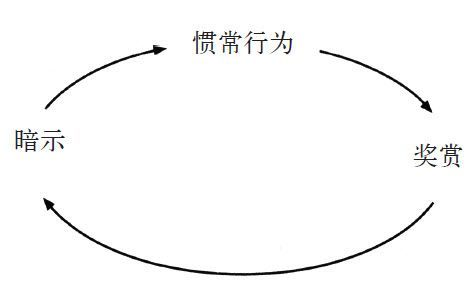
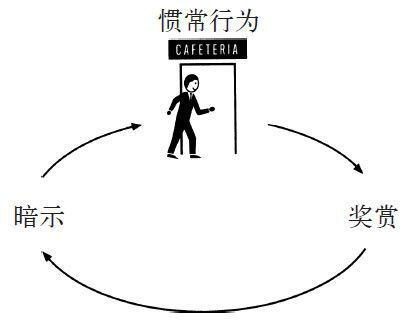
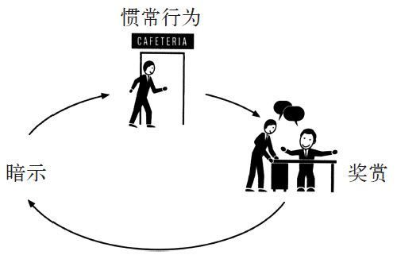
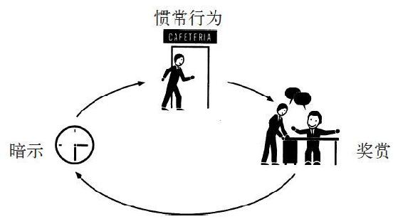
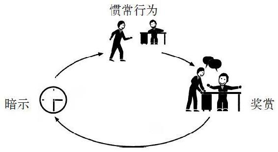

本书每一章都从不同的角度为读者解释了习惯存在的原因以及习惯的运作方式。本附录中提到的理解框架试图从非常基本的角度，提炼研究人员找到的，用来分析并改变我们生活中各种习惯的方法。本书并不想做到无所不包，只是提供一个实践指导，一个开端。配合本书各章节更加深入的内容，这本书就是告诉你今后该如何做的指南。
改变可能不会很快，而且并不总是容易。但只要付出时间和努力，几乎所有的习惯都是可以改变的。
理解框架：
找出惯常行为
用各种奖赏进行试验
将暗示隔离出来
制订计划
第一步：找出惯常行为
在每种习惯中有一种简单的神经逻辑回路，这种回路包含三部分：暗示、惯常行为和奖赏。

要了解自己的习惯，你得找到回路的各个部分。一旦发现行为中存在的习惯回路，你就能想办法用新的惯常行为取代旧的坏习惯。
比如你有一个坏习惯，就像我为撰写本书做研究时的习惯一样，喜欢每天下午去咖啡厅买巧克力豆饼干。假设这个习惯让你胖了几磅，或者说这个习惯实际上让你胖了8磅，然后你妻子针对你的体重说了一些让你不爽的话。于是你总是强迫自己停止吃饼干，但徒劳无益，你觉得很累，你甚至还在电脑上贴了即时贴，写着再也不吃饼干了。但是每天下午你都会当这张即时贴不存在，照样晃悠着去咖啡厅，然后买饼干，接着在收银台附近与同事闲聊时就开始吃。吃的时候感觉很好，吃完就难受了。你跟自己发誓，说你明天会用全部的意志力来抵制饼干的诱惑，明天会是新的一天。
不过第二天这个习惯照旧。
你怎样开始分析，然后改变自己的行为呢？
就是要弄清楚自己的习惯回路。第一步是找出自己的惯常行为。饼干的案例和大部分习惯一样，其中的惯常行为几乎是最明显的，是你想要改变的行为。你的惯常行为是下午从桌子旁起来，走到咖啡厅，买巧克力豆饼干，然后在和朋友聊天的时候吃，那么这就是你加入到习惯回路中的东西。

接着，还有一些较为隐蔽的问题：这一惯常行为的暗示是什么？是饥饿吗？是无聊吗？是因为低血糖？还是说你在全身心投入到下一件工作前，需要休息下，而吃饼干就是休息的一种方式？
那么奖赏是什么？是饼干吗？还是换了环境？或者是暂时散散心？又或者是与同事聊天？也有可能通过突然摄入那么多糖获得了能量充沛的感觉?
要弄清楚究竟怎么回事，你需要做点儿实验。
第二步：用奖赏做实验
奖赏的影响力很大，因为它们能满足人的渴求感。但人往往意识不到在背后驱动我们行为的渴求。比如，营销团队发现消费者在每次例行清洁后需要新鲜的气味，他们找到了一种任何人都不曾意识到的渴求。其中的奥秘就在眼前。回想一下，就会发现大多数渴求都非常明显，但我们就在它们面前却视而不见，这实在令人难以置信。
为了确定是哪些渴求在驱动习惯，就要用不同的奖赏做实验。这也许会花几天、一周或者更长的时间。在这段时间里，你在做出切实的改变时不应该感到任何压力，把自己想象成数据收集阶段的科学家就行。
在实验的第一天，你会非常想去咖啡厅买饼干，那么你得调整一下你的惯常行为，这样会得到不同的奖赏。比如，你没有去咖啡厅，而是在社区附近散步，然后回到办公桌前，什么也没吃。
第二天，你去咖啡厅买了个甜甜圈，或者糖果条，然后回桌子那儿吃。
第三天，你去了咖啡厅，买了个苹果，然后和朋友聊天时吃了。
接着，你试着改成麦咖啡，然后你都不去咖啡厅了，而是到朋友的办公室闲聊几分钟，然后回去工作。
这下你应该懂了。你选择用什么行为取代买饼干并不重要，重要的是要测试各种假设，确定哪种渴求在驱动你的惯常行为。
你是因为渴求饼干本身，还是想休息一下再工作？
如果是饼干本身，那是因为你饿了吗？（如果是这样，苹果应该也可以满足你。）
或者是因为你需要饼干提供的能量？（如果是这样，咖啡应该可以满足你。）
或者，你走去咖啡厅是因为你想找人闲聊，而饼干不过是个比较好的借口？（要是这样，走到别人办公桌前，和对方闲聊几分钟，应该能满足你的冲动。）
等你试了4~5个不同的奖赏后，你就可以用老办法寻找其中的规律：每次活动之后，拿支笔在纸上写下你一回到桌前就想到的头三样东西。可以是你的情绪或者思维，或者写下对自己感觉的想法，要么就写出头三个你想到的词。
然后，在手表或电脑上设个15分钟后就响的闹钟。等到闹钟响了，你就问自己是否还有吃饼干的冲动。写下三样东西很重要，就算写下的词毫无意义，你也要写，原因有两个。其一，这样做会迫使你此刻意识到自己在想什么或者感觉如何。其二，研究表明，写几个单词有助于你今后回忆起自己当时在想什么。在实验结束时，如果你回顾自己的笔记，就能很容易记起自己当时的所思所想，在那一刻究竟是什么感觉。因为你写下的东西会帮助你进行全面的回忆。
那为什么闹钟设的时间是15分钟后呢？因为这些测试的重点是找出你渴求的奖赏是什么。如果吃掉甜甜圈15分钟后，你还是有冲动起身去咖啡厅，那驱动你习惯的就不是对糖的渴求。如果在和同事闲聊之后，你还是想吃饼干，那么与人接触的需求就不是你吃饼干行为的诱因。
从另一个角度看，如果和朋友聊天的15分钟后，你发现自己可以轻松地回去工作，那么你就找到了习惯回路中的奖赏，也就是临时散散心，和人聊聊天。这就是你的习惯想要满足的东西。
通过用不同的奖赏进行试验，你可以将你实际渴求的对象分隔出来，这就是重塑习惯最基本的要素。

一旦你找出惯常行为和奖赏，剩下要做的就是找到暗示了。
第三步：分隔出暗示
一直以来，有一个问题困扰了社会学家很多年，即为什么有些罪行的目击者会混淆自己目击的内容，而其他人可以准确地回忆起事件的经过？大约10年前，西安大略大学的一位心理学家试图找到该问题的答案。
当然，目击者的回忆至关重要。然而，很多研究表明，目击者往往会混淆自己看到的情形。比如他们坚持说小偷是男性，而嫌疑犯却是穿着裙子的女性。或者甚至在警方的报告都说案发时间是下午两点时，目击者依然声称案发时间是在黄昏。而其他目击者却可以清楚地记得看到的罪案的经过，回忆时能够近乎完美地描述整个过程。
针对该现象，研究人员做了很多研究，试图确定为什么有些目击者能记得更清楚。研究人员的结论很简单，就是有些人的记忆力更好，或者罪案发生的地方是这些目击者熟悉的地方，他们因而更容易回忆起事件的经过。但是这些结论并不能经得起检验。不管目击者的记忆力如何，或者对案发现场有多熟悉，他们都有可能出现混乱的回忆。
西安大略大学的这位心理学家采用了不同的方法。她猜想之前的研究人员是否错误地把注意力都放到了讯问方与目击者的说辞上，而忽略了他们是怎么说的。她怀疑在整个过程中存在一些微妙的暗示在影响着整个讯问过程。但当她看了一堆讯问目击者的录像带后，她没能从中找到任何这种暗示。每一场讯问活动的细节太多了，有面部表情，各种问题被提出的方式也不同，还有双方情绪的波动，她没法从这么多细节中找到任何规律。
所以她有了一个主意，要列出一串自己会关注的要素，比如讯问方的语调，目击者的面部表情，双方座位的距离。然后她把所有会影响她关注这些要素的信息全部剔除。比如她关小了电视机的声音，这样就不会去关注具体的内容，只会专注讯问方的语调。她还用纸把屏幕上讯问方的脸贴起来，这样就只会看到目击者的面部表情。她还拿了一盒带子当尺子，在屏幕上量双方之间的距离。
她一开始研究这些要素后，其中的规律模式就呈现在眼前。她发现，如果目击者有关案发经过的记忆混乱，那么讯问目击者的警察在问话时通常都语调柔和而友好。如果目击者展露了更多笑容，或者坐得离问话的警察更近，那记忆混淆的可能性会更大。
换句话说，当环境中的暗示表明“我们是朋友”时，目击者就更有可能混淆记忆中发生的事，而这种暗示有可能是柔和的语调或者微笑的表情。也许原因是从潜意识上，这些友好的暗示在目击者身上诱发了一种取悦讯问者的习惯。
但是，这一实验的重点是有很多其他研究人员都看过了同一批录像带，许多聪明的人都看过了同样的行为模式，但是之前谁都没有把它们挑出来。因为每一盒带子的信息量太大，很难让人看到其中微妙的暗示。
不过，在这位心理学家决定只关注三大类行为，并将其他无关的信息剔除掉之后，其中的规律就显而易见了。
我们的生活大同小异。之所以很难发现诱发人习惯的暗示，原因在于我们的行为包含了太多的信息量，远远超过了我们的处理能力。问问你自己，你每天早上定时吃早餐是因为你饿了吗？还是因为时钟显示已到7点半？或者因为你的孩子们已经开始吃早餐了？又或者因为你穿好了衣服，而这个动作完成后，吃早餐的习惯就出现了？
是什么让你开车上班时自动将车左转？是因为街上的行车标志吗？还是某棵树？还是说，实际上是因为你知道这条路方向是对的？也许是上面所有因素加在一起让你左转？你送孩子去学校，结果发现自己无意识地开上了上班的那条路，而不是去学校的路，那是什么让你犯了这个错误？是什么暗示让你此时选择了“开车上班”这一习惯，而不是“开车去学校”的习惯呢？
我们可以使用那位心理学家采用的同样体系从大量的信息中找出暗示：事先定好有哪几类行为需要注意，以便让你发现其中的规律。幸运的是，科学在这方面帮了我们的忙。很多实验显示，几乎所有的习惯性暗示都可以归为以下五大类中的一类：
· 地点
· 时间
· 情绪状态
· 其他人
· 之前紧挨着的动作
所以如果你想找到“去咖啡厅并买巧克力豆饼干”这个习惯的暗示，那请在这一冲动出现时写下5样东西（下面这些是我在分析自己的习惯时做的笔记）：
你在哪？（坐在我的办工桌前）
现在几点？（下午3点36分）
你的情绪怎样？（觉得无聊）
周围有谁？（空无一人）
在买饼干的冲动之前，你做了什么？（我回复了一封电子邮件）
第二天：
你在哪？（从复印机那儿往回走）
现在几点？（下午3点18分）
你的情绪怎样？（觉得开心）
周围有谁？（体育部的吉姆）
在买饼干的冲动之前，你做了什么？（我复印了一份东西）
第三天：
你在哪？（会议室）
现在几点？（下午3点41分）
你的情绪怎样？（累，对自己正在做的项目感到激动）
周围有谁？（其他来开会的编辑）
在买饼干的冲动之前，你做了什么？（我坐了下来，因为会议要开始了）
有这三天的记录，已经可以清楚地看到是什么暗示诱发了我买饼干的习惯，让我每天在固定的时间有吃零食的冲动。在第二步我就发现我有这个习惯并不是因为饿。我找寻的奖赏是暂时散散心，也就是通过与朋友闲聊得到消遣。我现在知道这一习惯诱发的时间是在下午3点到4点之间。

第四步：制订计划
一旦你发现了你的习惯回路，你就找到了驱动你行为的奖赏、诱发你习惯的暗示以及惯常行为本身，这样你就可以开始改变你的行为了。通过围绕暗示设计，选择能够满足你所渴求的奖赏的行为，你就可以改善你的习惯。你需要的是一个计划。在前言中，我们了解到习惯是一种在特定的时间，你会做出的选择，然后你便不会再去想，却会日复一日地重复它。
换句话说，习惯是大脑自动遵循的行为模式，也就是我看到暗示时，我会做出惯常行为，目的是要得到奖赏。为了调整这个模式，我们需要重新进行选择。许多研究表明，这样做最容易的方式是制订计划。在心理学里中，这些计划被称为“执行意图”。
比如，拿我在下午买饼干的习惯作为例子，通过这个框架，我发现我的暗示一般大约出现在下午的3点半。我知道我的惯常行为是去咖啡厅买饼干，同时还与朋友聊天。通过实验，我发现我渴求的并不是饼干本身，而是那一小段时间的悠闲以及与别人交往的机会。
于是我为自己制订了计划：
每天下午3点半，我会到朋友的办公室和他聊上10分钟。
为了确保我记得这样做，我在手表上设了下午3点半的闹钟。
这样做并没有立刻收到效果。我有时候太忙了，都忘记自己设了闹钟，然后旧瘾复发。其他时候好像是工作太多，要找个愿意跟你聊的朋友很难，而买饼干很简单，于是我又在冲动面前投降了。但在我按照自己的计划行事的日子里，每次闹钟一响，我就强迫自己走到朋友办公桌那和他聊上10分钟，我发现我每天工作结束时感觉更舒坦了。我没去咖啡厅，也没有吃饼干，而我依然感觉良好。最终，这变成了自发行为：每次闹钟一响，我就去找朋友，然后每天结束时，内心都有一种细微但是真实的成就感。几个星期以后，我不再去想自己的这种惯常行为了。等到我找不到人可以聊天时，我就去咖啡厅，和在那里的朋友们一起喝茶。
这一切都发生在6个月之前。我现在都不戴表了，因为丢了。但是，每天下午的3点半，我依然不知不觉地站起来，看看新闻编辑室里谁有时间可以和我闲谈，花10分钟时间聊聊新闻，然后回去工作。现在这一切都是在我不假思索的情况下发生的，这已经变成了一种习惯。

显然，改变某些习惯很难，但是这个框架是一个好的开端。有时候改变习惯要花很长的时间，有时候会经历反复的实验与失败。不过，一旦你弄清楚了习惯背后的机理，也就是你能够分析出暗示、惯常行为和奖赏时，你就有了超越习惯的力量。